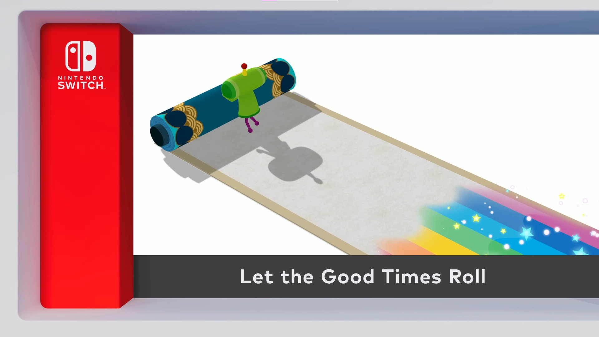
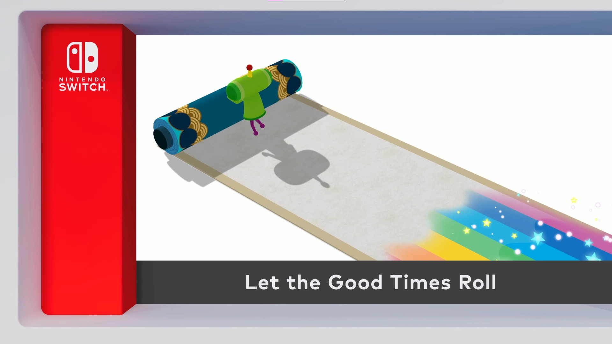
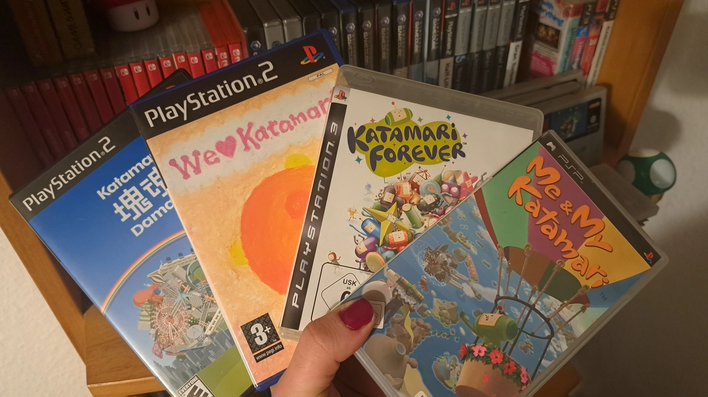
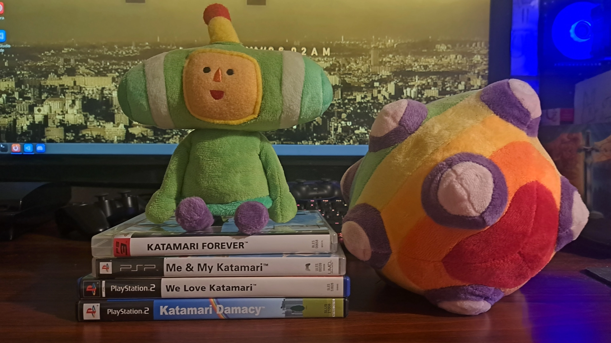
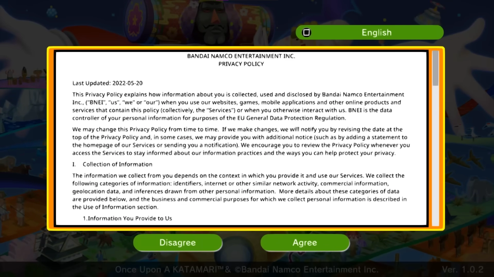

Once Upon a Time, there was a Katamari
Once Upon a Time, there was a Katamari
SPOILER WARNING !!
This blog entry contains spoilers to Once Upon a KATAMARI and perhaps even a few other Katamari games !
If you have yet to play the Katamari games, especially Once Upon a KATAMARI, and do not want to get spoilered, i'd recommend you'd not read this blog entry !
And please, play Katamari if you haven't done so yet ! You're really missing out !
Once upon a time, there was a game called Katamari Damacy. It was a game like no other. At a time, where the technology in video games progressively got better and better over the years, this game really stood out from the crowd of the ever growing video game market. I mean, what games usualy come to mind, when you think of the year 2004? GTA: San Andreas? Half-Life 2? They all mostly feature the same technical improvements. More realistic graphics, better sound and all that neat stuff compared to their previous entries ! Katamari Damacy is not one of those games. Not only wasn't it a sequel to a well established and beloved video game franchise, but it also didn't feature any "realistic" graphics, most early- to mid 2000's games are known for. Katamari Damacy didn't need all of that. It simply stayed true to itself ! Created by japanese artist and video game developer Keita Takahashi and released on the 18rd of March 2004 in Japan and a few months later, on Septmeber 21st 2004 in North America, this game quickly took the world by storm ! In Katamari Damacy, you take control of the Prince, who's father, the King of all Cosmos, accidentily destroyed all the stars in the galaxy, after having one too many drinks. So the King tasks the Prince with rolling a sticky ball, called the katamari, on earth to roll up objects of all kinds to replace the stars in the night sky. It quickly found a huge fanbase. Katamari Damacy had such a big impact, a playable demo of the game was even displayed in the Museum of Modern Art in Manhattan.
Fans all over the world loved Katamari Damacy's unique nature ! There just weren't that many games like it on the market at that time ! But with an average playtime of about 6 hours, this game could easily be finished in one evening and the fans cried out for more ! Namco heard the wishes of the fans, and plans were quickly set in motion to develop a sequel to Katamari Damacy, although series creator Keita Takahashi wasn't too fond of the idea of a "Katamari Damacy 2". After learning however, that Namco would continue to make Katamari games in the future even without his direct involvement in development, Takahashi decided to help produce the next release in the Katamari series, so fans wouldn't be disapointed if the game turned out to be a flop. And after what would become "We Love Katamari", which released for the PS2 in 2005, Takahashi went to work on other projects inside Namco up until his departure from the company in 2009.
Namco (and later on Bandai Namco) however, wasn't done with Katamari. Far from it ! They continued to make sequel after sequel. Some of them turned out just fine without the series original creator on board, others... ehhh? After the release of "Touch my Katamari" for the PS Vita in 2012, the series went on an indefinite hiatus. There were of course the two remasters of the first two titles which released in 2018 and 2023 respectively, and even a few sad attempts to jump on the mobile game bandwagon in the 2010s, but other than that, it seemed like that Bandai Namco didn't have any plans to continue this series and that the ball had finally stopped rolling after all those years...
31st of July 2025...
 

Katamari Damacy is a game series i hold very near and dear to my heart ! Honestly, what more could you want in life, when you have a game where you roll a sticky ball all around the world, rolling up objects and getting bigger and bigger all the while listening not only to some sweet shibuya-kei tunes, but also the screams of every human on earth rolled into the ball, moments away from being condensed into a star in the cosmos? It's one of few games i can always easily get into after a long and exhausting day. So when i had a bad day, but i still have a little bit of energy left in my sad, empty little soul, i can just pop We Love Katamari into my PS2 and imediatly feel WAYYY better ! The smooth and relaxing gameplay, all the levels, where the devs switched up the original katamari concept with some really creative ideas, like rolling a sumo wrestler around town, rolling up foods and drinks to make him stronger or lighting a campfire with a burning katamari ! And let's not forget about the MUSIC. OH MY GOD THE MUSIC ! HAVE YOU EVER LISTENED TO THE KATAMARI SOUNDTRACK ?! This isn't just a We Love Katamari-only trait, the Katamari series in general has a wonderful soundtrack ! I could go on about why i love Katamari Damacy, but we'd be here for the next few days...


When Once Upon A Katamari was announced earlier this year in the july nintendo direct, i screamed. Very loud. My neighbours probably thought my cat stabbed me in the chest with a kitchen knife. I'm talking about screams of joy, obviously ! It kind of reminded me of my reaction when the Paper Mario TTYD remake was announced two years ago in september. What i didn't know at that time is, that the trademark for this game had already been registered and made public all the way back in march of this year. And people were already talking about it ! I haven't heard anything about this ?! The only thing i've heard of Katamari News this year, before the july Nintendo Direct, was that one Apple Arcade Katamari game, where the King turned into a popular twitch streamer. wh- whut.
But like in general, the Katamari series spans a wide array of amazing games !
In other words: I was soooo in for a new Katamari game, because i love Katamari ! No wait that's not right... WE love Katamari !...
Anyways, i knew i had to get my hands on this game on release day ! The new premise of the game is, that you roll the Katamari in different parts of history and from the nintendo direct trailer the game looked pretty promising, despite the fact that the frame rate on switch resembled a flip book and that there was no switch 2 edition of this game. So i just opted to get the game on Steam, just to be safe.
The game starts in traditional Katamari Damacy fashion with a flashy, colourful and funky intro cutscene ! Any Katamari game, which doesn't start this way simply isn't a katamari game, just to make this clear ! After choosing a save file (and adjusting the window size to fullscreen, if you are on pc lmao) you are thrown into a little introduction, talking about the king's past achivements and the current whereabouts of the royal family. The game then throws you into a tutorial stage, where you clean up a room in the castle. Somebody once told me the world is gonna roll me. I ain't the sharpest tool in the sheed.
OH GODDIE YES DADDY BANDAI NAMCO LET ME SIGN MY SOUL AWAY TO PLAY YOUR VIDOGAEM AND WHILE WERE AT IT WANNA SEE THE SECURITY NUMBER OF MY CREDIT CARD AS WELL?! Seriously, why is modern gaming like this ?! I know, Bandai Namco has been doing this for years already, but just because they've been doing it for a while doesn't justify it for a good thing ! Games don't need that ! The original Katamari games didn't need that ! I don't want to accept to any data collection stuff or eula bullshit ! Just let me play the game !
sigh...Right... anyways. After choosing a save file (and adjusting the window size to fullscreen, if you are on pc lmao) you are thrown into a little introduction, talking about the king's past achivements and the current whereabouts of the royal family. The game then throws you into a tutorial stage, where you help the King and the Queen clean up a room inside the royal estate with the help of your trusty old Katamari. And if you know anything about the Katamari Damacy series, you may know that the controls have always been very funky ! I never really minded them, but for people who are strugling with Katamari's dual analog stick controls, the game let's you choose the control method between the original and a simpler control method, which is definitely a neat thing ! The tutorial stage also sets the tone really great with the song playing during the tutorial. I will go a bit deeper into Once Upon a Katamari's soundtrack a bit later on, but i just have to talk about this for a moment ! At the beginning of the tutorial stage you see the prince just standing aimlessly in the room, waiting for the king to finish his monolouge without any kind of music playing at that moment. But as soon as you finally get your hands on your katamari, the song "Katamari on the Doun" starts blasting in your ears. It's energetic, its pumped up ! It get's you motivated to roll a katamari ! And you're just sitting there, thinking to yourself: "Awww hell yeah ! Katamari is back, baby !" As if this song was chosen intentionally by the developers as some sort of welcome back message to old fans of katamari damacy, after the 14 year long hiatus of the series !
After the tutorial, the game continues setting the story of the game. Basically, the story of the game is that the King of All Cosmos was playing around with a mysterious scroll, which the royal family found while cleaning the castle. The king was doing a bunch of tricks with that scroll, and as a grand finale, flung up the scroll way up in the sky, which ended up not only destroying all the stars in the galaxy, but also the earth this time arround.
"Talk about Déjá vu... This is getting annoying..."
Sooo... The earth is gone to now. No place to roll on, right? Well... what now? Turns out this mysterious Scroll, the King was toying with, was actually the so called Cosmos Scroll, which holds the entire history of planet earth. From the Stone Age, to Edo Japan and even Ancient Greece! So the King tasks the Prince and his Cousins with traveling through all these historic time periods inside the Cosmos Scroll to roll up objects of times past in order to restore earth and the glorious stars in the galaxy! ...again.
The new soundtrack FUUUUCKKSSS ! To be honest, we all expected the soundtrack to be great. It's Katamari after all ! As i mentioned earlier, Katamari on the Doun set the Tone of the game perfectly !
Another neat detail about this game is that the songs, which play in the levels, get higher in pitch once you start running out of time. It's a small but neat addition, which i just have to praise the developers for ! I just love those kinds of attention to detail !